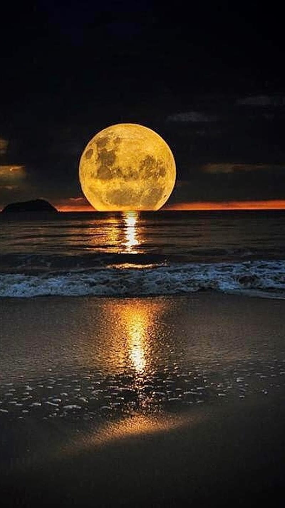
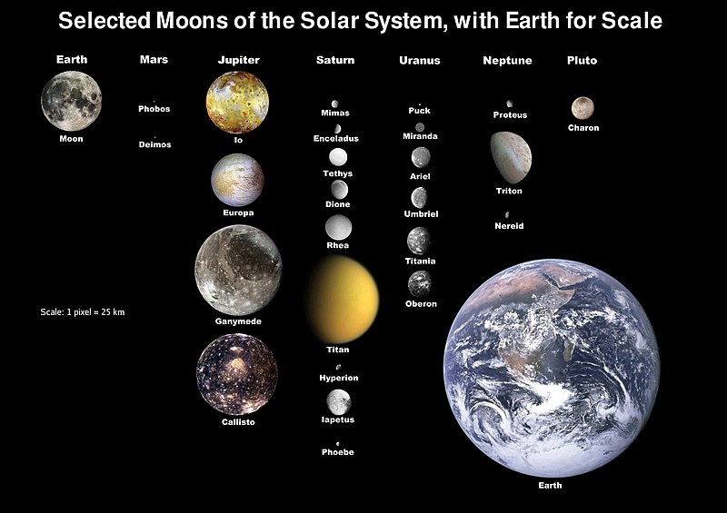
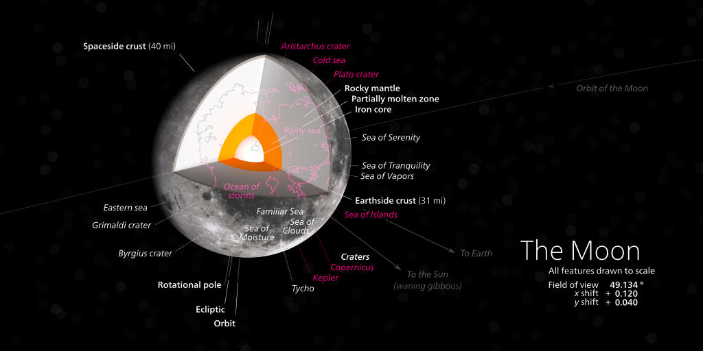

Moon

About
The Moon is Earth's only natural satellite. It orbits at an average distance of 384,400 km (238,900 mi), about 30 times the diameter of Earth.
Tidal forces between Earth and the Moon have over time synchronized the Moon's orbital period (lunar month) with its rotation period (lunar day)
at 29.5 Earth days, causing the same side of the Moon to always face Earth.
The Moon's gravitational pull – and to a lesser extent, the Sun's – are the main drivers of Earth's tides.
In geophysical terms the Moon is a planetary-mass object or satellite planet.
Its mass is 1.2% that of the Earth, and its diameter is 3,474 km (2,159 mi), roughly one-quarter of Earth's (about as wide as Australia).
Within the Solar System, it is the largest and most massive satellite in relation to its parent planet, the fifth largest and most massive moon
overall, and larger and more massive than all known dwarf planets.[18] Its surface gravity is about one sixth of Earth's, about half of that of Mars,
and the second highest among all Solar System moons, after Jupiter's moon Io. The body of the Moon is differentiated and terrestrial, with no significant
hydrosphere, atmosphere, or magnetic field. It formed 4.51 billion years ago, not long after Earth's formation, out of the debris from a giant impact
between Earth and a hypothesized Mars-sized body called Theia.

